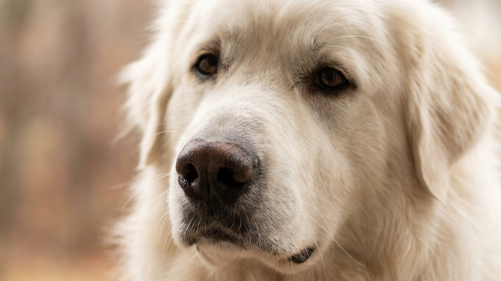

Выглядит как полярный медведь, весит до 54 кг, лает ночью на всё, что движется за забором, и принимает решения самостоятельно. Пиренейская горная собака (Great Pyrenees): не квартирный питомец и не собака для новичка. Разбираем честно: для чего выведена эта порода, что с ней сложно в быту и кому она действительно подойдёт.
🐾 Ваш питомец — пиренейская горная собака?
Заведите профиль в AnimaLife: приложение запомнит породу, возраст и вес и будет подсказывать по уходу именно для неё. Вопросы AI-ветеринару — круглосуточно и бесплатно.
Завести профиль → Завести в MAX →
У вас iPhone? AnimaLife есть в App Store
Пиренейская горная собака тысячи лет охраняла отары овец в горах на границе Франции и Испании. Работа пастушьего охранника (LGD, Livestock Guardian Dog) отличается от работы пастуха или служебной собаки: не гонять скот, а отпугивать волков и медведей. Для этого нужна самостоятельность. Собака работала без команды хозяина, целыми ночами, на большой территории.
Эти инстинкты никуда не делись. Современная пиренейская горная собака так же самостоятельна, так же активна ночью и так же недоверчива к незнакомцам. Это не воспитание, а порода.
Дом с участком — минимальное требование. Лучше всего: сельская местность или частный дом с двором, где собака может обходить периметр и контролировать территорию. Это её базовая потребность, без которой порода не раскрывается.
Хозяин должен понимать породных собак. Не обязательно иметь опыт именно с LGD, но нужно знать, как работать с самостоятельными породами: не ломать через доминирование, а выстраивать границы через ритуал и последовательность. Для семей с детьми подходит хорошо: с детьми своей семьи пиренейская горная собака терпелива и мягка.
Шерсть у породы двойная: плотный подшёрсток и длинная внешняя шерсть. Раз в неделю — обязательное расчёсывание, во время линьки (весна, частично осень) — каждый день. Колтуны образуются быстро, особенно за ушами и в паху. Запускать их не стоит: потом приходится выстригать.
Линька обильная. Белая шерсть остаётся везде — на мебели, одежде, полу. Это нужно принять до того, как брать щенка, а не после.
Купать пиренейскую горную собаку часто не нужно: шерсть грязеотталкивающая, грязь в высохшем виде вычёсывается. Достаточно купания раз в 2-3 месяца или по необходимости.
У крупных собак следите за весом и состоянием суставов — это общая рекомендация для пород такого размера, конкретные вопросы обсуждайте с ветеринаром при плановом осмотре. Плановые осмотры для пиренейской горной собаки раз в полгода — разумная практика. Если собака стала меньше двигаться, прихрамывает или избегает лестницы — не откладывайте визит.
Материал носит информационный характер и не заменяет очную консультацию ветеринара.
🐾 У вас пиренейская горная собака?
AnimaLife соберёт уход под породу: к каким болезням есть склонность, что проверять по возрасту, чем кормить и когда пора к врачу. Бесплатно, прямо в мессенджере.
Собрать план ухода → Собрать в MAX →
У вас iPhone? AnimaLife есть в App Store
🐾 Понравился разбор?
Подпишитесь на канал — каждый день разбираем по одному тревожному симптому у кошек и собак: что в пределах нормы, а когда пора к врачу. Подпишитесь, чтобы не пропустить разбор, который может спасти здоровье вашего питомца.